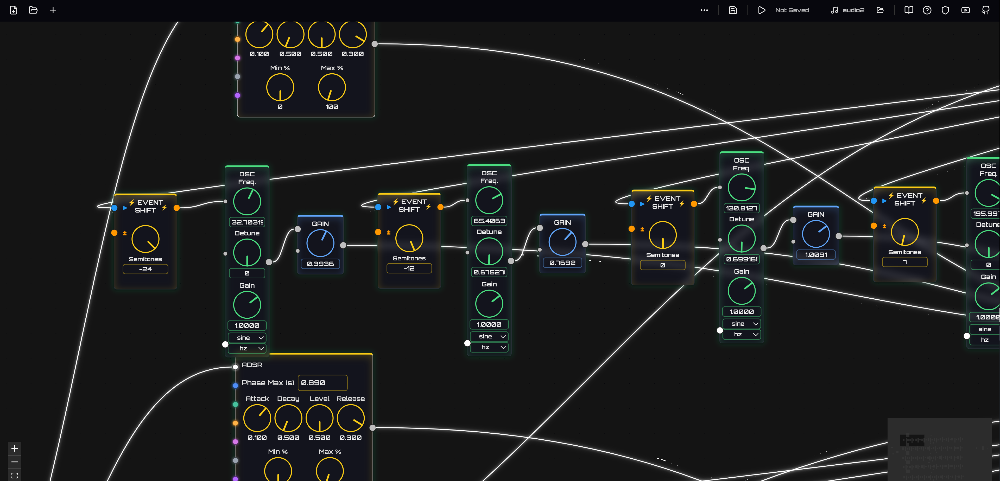

Patch sound. Share the graph.
Synflow is a browser-based, node-graph workstation for building synths, effects, MIDI tools and interactive audio — powered by the Web Audio API and AudioWorklets. No install, no account.

What's in the box
A modular-synth feel with an editor built for fast iteration: wire nodes, hear the result, keep what works.
Visual node editor
Drag oscillators, filters, envelopes and effects onto a canvas and connect them. Hybrid graph: audio-rate signals and flow-event/control streams side by side.
Web Audio building blocks
Oscillators, filters, dynamics, delay, reverb, distortion, frequency shifters and analyzers — plus AudioWorklet/WASM processors for low-latency DSP.
MIDI & sequencing
MIDI notes, knobs and files, clocks, arpeggiators, automation and frequency utilities. Play a patch from a keyboard or the on-screen piano.
Live instrument panel
Expose the knobs that matter and get a playable panel with keyboard or drum pad — or design a custom HTML faceplate.
Mothscilla DAW
Use Synflow flows as instruments and effects inside a pattern/arrangement DAW with mixer, buses, automation and a built-in EQ.
VibePlugin support
Load AI-built .vstai plugins from the VibePlugin gallery as instruments or effects, next to your own flows.
Public flow gallery
Open a community patch, see its graph, and load it into the editor with one click. Every flow is plain JSON — download it, remix it, publish your own.
Share your own
Add a flow to the gallery with a pull request: node scripts/build-flow-gallery.mjs publish my-flow.json --name "My Flow" --desc "…" bundles its sub-flows and regenerates the catalogue. See the gallery guide.